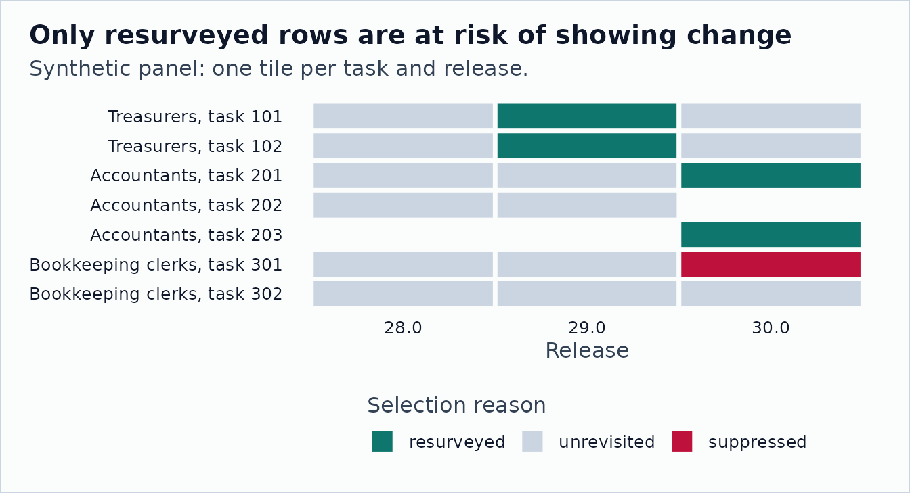

Resurvey Cycles and Content Change
Source:vignettes/resurvey-and-content-change.Rmd
resurvey-and-content-change.RmdO*NET does not re-rate every occupation in every release. Its incumbent survey rotates across part of the taxonomy each year, and the rest of the database is carried forward. A task rating that did not move between two releases may simply not have been measured again, and a comparison only carries information about content change when the occupation was actually resurveyed.
Three verbs make that structure explicit:
-
onet_resurvey_panel()exposes the occupation survey clock, which is the newest surveysource_datein each release. -
onet_condition_on_resurvey()labels every row with the reason it is or is not at risk of showing change. -
onet_content_change()computes seam-aware task-set and rating metrics between releases.
They supply denominators and metrics. Modeling, weighting, and inference stay with you.
A Synthetic Three-Release Panel
The panel below is synthetic. The O*NET-SOC codes and titles are real, but the task ids, Importance ratings, and dates are invented so that each pattern appears once: a resurvey that changes ratings, a carry-forward that looks like stability, a resurvey that replaces a task, and a suppressed estimate.
release_rows <- function(version, date, task_id, value, source_date,
suppress = "N") {
tibble::tibble(
release_version = version,
release_date = as.Date(date),
soc_vintage = "2019",
onet_soc_code = rep(c("11-3031.01", "13-2011.00", "43-3031.00"), each = 2),
title = rep(
c(
"Treasurers and Controllers",
"Accountants and Auditors",
"Bookkeeping, Accounting, and Auditing Clerks"
),
each = 2
),
task_id = task_id,
scale_id = "IM",
data_value = value,
source_date = as.Date(source_date),
domain_source = "Incumbent",
recommend_suppress = suppress
)
}
panel <- bind_rows(
release_rows(
"28.0", "2023-08-01",
task_id = c("101", "102", "201", "202", "301", "302"),
value = c(4.2, 3.1, 4.5, 3.8, 3.9, 2.7),
source_date = rep(c("2021-06-01", "2021-06-01", "2019-07-01"), each = 2)
),
release_rows(
"29.0", "2024-08-01",
task_id = c("101", "102", "201", "202", "301", "302"),
value = c(4.4, 3.4, 4.5, 3.8, 3.9, 2.7),
source_date = rep(c("2024-03-01", "2021-06-01", "2019-07-01"), each = 2)
),
release_rows(
"30.0", "2025-08-01",
task_id = c("101", "102", "201", "203", "301", "302"),
value = c(4.4, 3.4, 4.6, 3.2, 3.9, 2.7),
source_date = rep(c("2024-03-01", "2025-04-01", "2019-07-01"), each = 2),
suppress = c("N", "N", "N", "N", "Y", "N")
)
)
panel |>
summarise(
tasks = paste(task_id, collapse = ", "),
importance = paste(data_value, collapse = ", "),
source_date = first(source_date),
.by = c(release_version, onet_soc_code)
) |>
knitr::kable(align = "l")| release_version | onet_soc_code | tasks | importance | source_date |
|---|---|---|---|---|
| 28.0 | 11-3031.01 | 101, 102 | 4.2, 3.1 | 2021-06-01 |
| 28.0 | 13-2011.00 | 201, 202 | 4.5, 3.8 | 2021-06-01 |
| 28.0 | 43-3031.00 | 301, 302 | 3.9, 2.7 | 2019-07-01 |
| 29.0 | 11-3031.01 | 101, 102 | 4.4, 3.4 | 2024-03-01 |
| 29.0 | 13-2011.00 | 201, 202 | 4.5, 3.8 | 2021-06-01 |
| 29.0 | 43-3031.00 | 301, 302 | 3.9, 2.7 | 2019-07-01 |
| 30.0 | 11-3031.01 | 101, 102 | 4.4, 3.4 | 2024-03-01 |
| 30.0 | 13-2011.00 | 201, 203 | 4.6, 3.2 | 2025-04-01 |
| 30.0 | 43-3031.00 | 301, 302 | 3.9, 2.7 | 2019-07-01 |
In real work the same frame comes from
onet_panel("Task Ratings", ...), which carries
source_date, domain_source, and
recommend_suppress from the archive files.
Read the Survey Clock
resurvey <- onet_resurvey_panel(panel)
resurvey |>
distinct(
onet_soc_code,
release_version,
occ_survey_date,
prev_survey_date,
resurvey_event,
cycle_index,
age_resolved
) |>
arrange(onet_soc_code, release_version) |>
knitr::kable(digits = 2, align = "l")| onet_soc_code | release_version | occ_survey_date | prev_survey_date | resurvey_event | cycle_index | age_resolved |
|---|---|---|---|---|---|---|
| 11-3031.01 | 28.0 | 2021-06-01 | NA | NA | 0 | NA |
| 11-3031.01 | 29.0 | 2024-03-01 | 2021-06-01 | TRUE | 1 | 2.75 |
| 11-3031.01 | 30.0 | 2024-03-01 | 2024-03-01 | FALSE | 1 | NA |
| 13-2011.00 | 28.0 | 2021-06-01 | NA | NA | 0 | NA |
| 13-2011.00 | 29.0 | 2021-06-01 | 2021-06-01 | FALSE | 0 | NA |
| 13-2011.00 | 30.0 | 2025-04-01 | 2021-06-01 | TRUE | 1 | 3.83 |
| 43-3031.00 | 28.0 | 2019-07-01 | NA | NA | 0 | NA |
| 43-3031.00 | 29.0 | 2019-07-01 | 2019-07-01 | FALSE | 0 | NA |
| 43-3031.00 | 30.0 | 2019-07-01 | 2019-07-01 | FALSE | 0 | NA |
A resurvey event means the survey clock advanced since the occupation’s previous release. Treasurers and Controllers were resurveyed in 29.0, which resolved 2.75 years of staleness. Accountants and Auditors kept their 2021 ratings in 29.0 and were resurveyed in 30.0. The clerks were never resurveyed in this window, and the first release has no prior release to compare against.
Build the At-Risk Set
conditioned <- onet_condition_on_resurvey(resurvey)
conditioned |>
count(release_version, onet_soc_code, selection_reason, at_risk) |>
knitr::kable(align = "l")| release_version | onet_soc_code | selection_reason | at_risk | n |
|---|---|---|---|---|
| 28.0 | 11-3031.01 | unrevisited | FALSE | 2 |
| 28.0 | 13-2011.00 | unrevisited | FALSE | 2 |
| 28.0 | 43-3031.00 | unrevisited | FALSE | 2 |
| 29.0 | 11-3031.01 | resurveyed | TRUE | 2 |
| 29.0 | 13-2011.00 | unrevisited | FALSE | 2 |
| 29.0 | 43-3031.00 | unrevisited | FALSE | 2 |
| 30.0 | 11-3031.01 | unrevisited | FALSE | 2 |
| 30.0 | 13-2011.00 | resurveyed | TRUE | 2 |
| 30.0 | 43-3031.00 | unrevisited | FALSE | 1 |
| 30.0 | 43-3031.00 | suppressed | FALSE | 1 |
Labels are assigned by precedence, so structural exclusions win over
the resurvey signal: taxonomy_seam first, then
suppressed, then resurveyed, then
unrevisited. Only resurveyed rows are at risk.
Pass at_risk_only = TRUE to keep just those rows.
short_title <- c(
"11-3031.01" = "Treasurers",
"13-2011.00" = "Accountants",
"43-3031.00" = "Bookkeeping clerks"
)
task_status <- conditioned |>
mutate(
row_label = paste0(short_title[onet_soc_code], ", task ", task_id),
row_label = factor(row_label, levels = rev(unique(row_label)))
)
ggplot2::ggplot(
task_status,
ggplot2::aes(x = release_version, y = row_label, fill = selection_reason)
) +
ggplot2::geom_tile(color = onet2r_colors[["bg"]], linewidth = 1.2) +
ggplot2::scale_fill_manual(
values = c(
resurveyed = onet2r_colors[["teal"]],
unrevisited = onet2r_colors[["light_gray"]],
taxonomy_seam = onet2r_colors[["amber"]],
suppressed = onet2r_colors[["rose"]]
),
name = "Selection reason"
) +
ggplot2::guides(fill = ggplot2::guide_legend(title.position = "top")) +
ggplot2::labs(
title = "Only resurveyed rows are at risk of showing change",
subtitle = "Synthetic panel: one tile per task and release.",
x = "Release",
y = NULL
) +
onet2r_theme() +
ggplot2::theme(panel.grid.major.x = ggplot2::element_blank())
Measure Content Change
changes <- onet_content_change(panel)
changes |>
select(
onet_soc_code,
from_release,
to_release,
n_added,
n_dropped,
n_retained,
jaccard,
churn_rate,
rating_delta_l2,
cosine,
safely_comparable
) |>
knitr::kable(digits = 3, align = "l")| onet_soc_code | from_release | to_release | n_added | n_dropped | n_retained | jaccard | churn_rate | rating_delta_l2 | cosine | safely_comparable |
|---|---|---|---|---|---|---|---|---|---|---|
| 11-3031.01 | 28.0 | 29.0 | 0 | 0 | 2 | 1.000 | 0.000 | 0.361 | 1.000 | TRUE |
| 13-2011.00 | 28.0 | 29.0 | 0 | 0 | 2 | 1.000 | 0.000 | 0.000 | 1.000 | TRUE |
| 43-3031.00 | 28.0 | 29.0 | 0 | 0 | 2 | 1.000 | 0.000 | 0.000 | 1.000 | TRUE |
| 11-3031.01 | 29.0 | 30.0 | 0 | 0 | 2 | 1.000 | 0.000 | 0.000 | 1.000 | TRUE |
| 13-2011.00 | 29.0 | 30.0 | 1 | 1 | 1 | 0.333 | 0.667 | 0.100 | 0.627 | TRUE |
| 43-3031.00 | 29.0 | 30.0 | 0 | 0 | 2 | 1.000 | 0.000 | 0.000 | 1.000 | TRUE |
jaccard is the retained share of the task union and
churn_rate is 1 - jaccard.
rating_delta_l2 is the size of the rating change among
retained tasks. cosine compares the rating vectors over the
task union with zero fill, so it responds to both turnover and rating
change.
Keep Only Comparisons That Carry Information
Content metrics and resurvey labels answer different questions. Join them before interpreting any change.
resurveyed <- conditioned |>
summarise(resurveyed = any(at_risk), .by = c(onet_soc_code, release_version))
informative <- changes |>
left_join(
resurveyed,
by = join_by(onet_soc_code, to_release == release_version),
relationship = "one-to-one"
) |>
select(
onet_soc_code,
from_release,
to_release,
resurveyed,
churn_rate,
rating_delta_l2,
safely_comparable
)
informative |>
knitr::kable(digits = 3, align = "l")| onet_soc_code | from_release | to_release | resurveyed | churn_rate | rating_delta_l2 | safely_comparable |
|---|---|---|---|---|---|---|
| 11-3031.01 | 28.0 | 29.0 | TRUE | 0.000 | 0.361 | TRUE |
| 13-2011.00 | 28.0 | 29.0 | FALSE | 0.000 | 0.000 | TRUE |
| 43-3031.00 | 28.0 | 29.0 | FALSE | 0.000 | 0.000 | TRUE |
| 11-3031.01 | 29.0 | 30.0 | FALSE | 0.000 | 0.000 | TRUE |
| 13-2011.00 | 29.0 | 30.0 | TRUE | 0.667 | 0.100 | TRUE |
| 43-3031.00 | 29.0 | 30.0 | FALSE | 0.000 | 0.000 | TRUE |
Four of the six comparisons show no change at all, and none of those four were resurveyed. Their zeros are carry-forwards, not evidence of stability. The two comparisons that can speak to content change are the resurveys:
| onet_soc_code | from_release | to_release | resurveyed | churn_rate | rating_delta_l2 | safely_comparable |
|---|---|---|---|---|---|---|
| 11-3031.01 | 28.0 | 29.0 | TRUE | 0.000 | 0.361 | TRUE |
| 13-2011.00 | 29.0 | 30.0 | TRUE | 0.667 | 0.100 | TRUE |
For which occupations were actually re-rated in each official update
cycle, compare against the O*NET Longitudinal Data Updates record from
onet_data_updates().
Crossing the Taxonomy Seam
O*NET 25.1, released in November 2020, moved to the O*NET-SOC 2019 taxonomy. Transition rows at that seam are analyst carry-forwards, not a new survey. The bundled fixtures span that seam.
seam_panel <- onet_panel(
"Task Ratings",
versions = c("24.3", "25.1"),
archives = c(
`24.3` = file.path(archive_base, "db_24_3_text"),
`25.1` = file.path(archive_base, "db_25_1_text")
),
release_dates = c(`24.3` = "2020-08-01", `25.1` = "2020-11-01")
)
seam_panel |>
onet_resurvey_panel() |>
onet_condition_on_resurvey() |>
select(
release_version,
onet_soc_code,
domain_source,
seam_in,
seam_type,
selection_reason
) |>
knitr::kable(align = "l")| release_version | onet_soc_code | domain_source | seam_in | seam_type | selection_reason |
|---|---|---|---|---|---|
| 24.3 | 15-1132.00 | Incumbent | FALSE | NA | unrevisited |
| 24.3 | 29-1141.00 | Incumbent | FALSE | NA | unrevisited |
| 25.1 | 15-1252.00 | Analyst - Transition | TRUE | soc_seam | taxonomy_seam |
| 25.1 | 15-1253.00 | Analyst - Transition | TRUE | soc_seam | taxonomy_seam |
| 25.1 | 29-1141.00 | Incumbent | TRUE | soc_seam | taxonomy_seam |
Every 25.1 row is labeled taxonomy_seam, including the
Registered Nurses row whose survey date moved from August to November
2020. A seam crossing is never counted as a resurvey. Content metrics
are still computed, but they are marked as not safely comparable:
onet_content_change(seam_panel) |>
select(
onet_soc_code,
from_release,
to_release,
soc_vintage_from,
soc_vintage_to,
rating_delta_l2,
seam_type,
safely_comparable
) |>
knitr::kable(digits = 3, align = "l")| onet_soc_code | from_release | to_release | soc_vintage_from | soc_vintage_to | rating_delta_l2 | seam_type | safely_comparable |
|---|---|---|---|---|---|---|---|
| 29-1141.00 | 24.3 | 25.1 | 2010 | 2019 | 0.1 | soc_seam | FALSE |
Occupations are matched on onet_soc_code, so codes that
split or merged at the seam, such as 15-1132.00 becoming 15-1252.00 and
15-1253.00, have no pair here. Bridge them with
onet_crosswalk_bridge() and
onet_panel_reconcile(), as shown in
vignette("longitudinal-archives", package = "onet2r").
Caller-Supplied Seams
The default seam table contains one package-verified seam, the
November 2020 move to O*NET-SOC 2019. If you have external evidence that
comparisons across another date need the same treatment for your
channel, pass a seams table. It replaces the default table,
so keep the SOC seam row. Differences in soc_vintage are
always flagged regardless of this table.
caller_seams <- tibble::tibble(
seam_type = c("soc_seam", "caller_seam"),
seam_date = as.Date(c("2020-11-01", "2024-02-01"))
)
onet_content_change(panel, seams = caller_seams) |>
select(onet_soc_code, from_release, to_release, seam_type, safely_comparable) |>
knitr::kable(align = "l")| onet_soc_code | from_release | to_release | seam_type | safely_comparable |
|---|---|---|---|---|
| 11-3031.01 | 28.0 | 29.0 | caller_seam | FALSE |
| 13-2011.00 | 28.0 | 29.0 | caller_seam | FALSE |
| 43-3031.00 | 28.0 | 29.0 | caller_seam | FALSE |
| 11-3031.01 | 29.0 | 30.0 | NA | TRUE |
| 13-2011.00 | 29.0 | 30.0 | NA | TRUE |
| 43-3031.00 | 29.0 | 30.0 | NA | TRUE |
The same seams argument works in
onet_resurvey_panel(), where rows entering through a caller
seam are labeled taxonomy_seam and leave the at-risk set.
The 2024 date here is illustrative. A caller seam is a sensitivity
choice that needs its own justification; the package does not treat any
other release, including v21.0, as a default seam.